Context
LFBP Pau Pyrénées stands 10 km north-west of Pau, in Uzein, with a long memory: the Wright school opened there in 1909 because the weather was milder than Le Mans, Blériot came back the same year to open his own training school, and by 1912 the French army had one of the largest flying schools in the country.
For Microsoft Flight Simulator it was a full reconstruction. Every building modelled and textured from scratch, many of them with interiors: the main terminal, the ATC tower, the Locavions hangar, the Aéroclub du Béarn. Mixed 2K and 4K PBR maps, an airport surface precise enough to be navigated with real aeronautical charts, and night lighting rebuilt detail by detail.
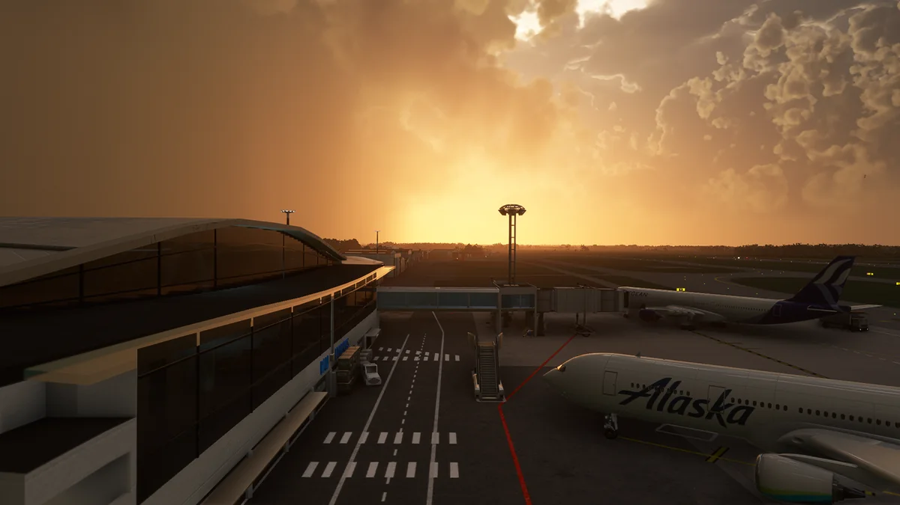
Research, and the people who helped
I was working thousands of kilometres away from Uzein. The charts gave me the layout and the satellite gave me the roofs; neither gave me the check-in machines, the floor of the terminal, or the shape of the signage. Those details only exist in photographs — and often only in photographs somebody took on a Saturday afternoon.
So I asked. Spotters, forum threads, people who live around the airport and photograph the apron for the pleasure of it. They answered, they went back, they sent more. Every interior on this airport exists because someone took the time to shoot it for a stranger.
Most of the references came from the internet: Facebook groups, Google Maps, Instagram. The rest arrived from people who wanted to help; they are already named in the credits of the airport itself, so I keep them there and not here.
The reference board is the receipt: interiors, hangars, miscellany, filled one image at a time in PureRef .
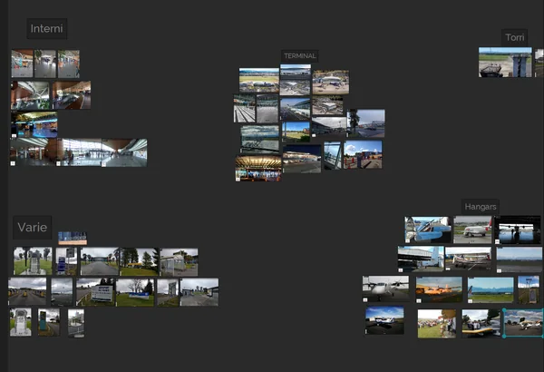
The terminal
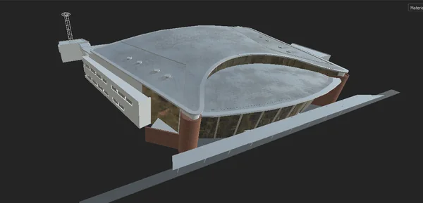
The exterior came first: roof, glass, the volumes that read from the apron. The picture here is the terminal during the first texturing pass on the outside, when the interiors did not exist yet.
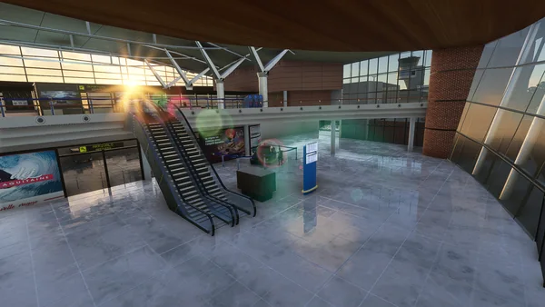
The inside came later, room by room: the hall, the escalators, the check-in area. It is the part nobody sees from the apron and everybody walks through on the way to the gate.
The terminal took a full week on its own. The experiment was new: fewer cubic shapes, rounder, almost organic. Curves I had never worked with, inclinations on more than one axis, flat extrusions on curved surfaces.
When I chose Pau, I chose it for this. That terminal is simply a work of art: futuristic in shape, with a rustic soul. A terminal that sinuous, lost in the Pyrénées-Atlantiques, near Lourdes and the Pyrenees. The mountain behind it, a remarkable building, and a tower that matches the standard of the whole airport surface.
That it would be a challenge, I knew. How much of one, I would find out soon enough.
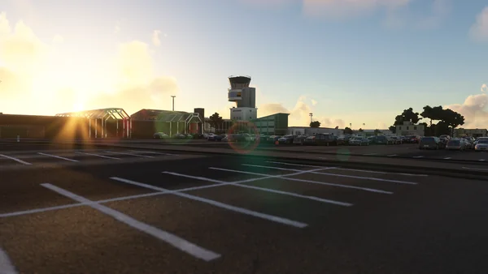
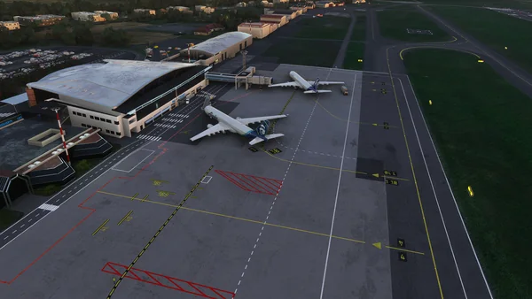
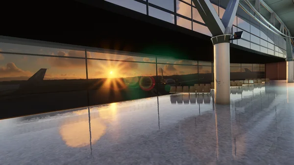
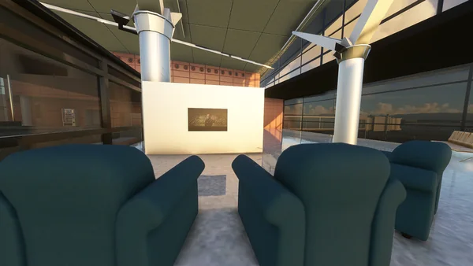
Buildings and props
The buildings around the terminal follow the same method: volumes from photographs, then the details that make the place recognisable. The two terminals and the tower sit in their real positions on the airport surface.
The tower is the building everyone looks at. Modelled in the round, the cab on two floors: the ring you see at the top from outside is the ceiling, not a third floor.
Then the small things. A check-in machine is not architecture, but it sits in every photograph of the hall, and it has to be right.
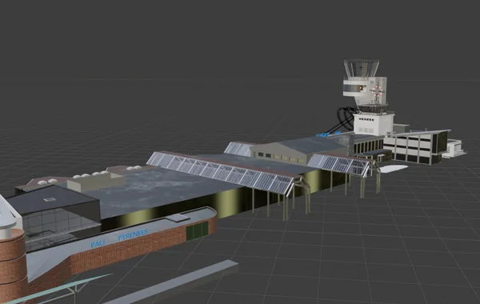
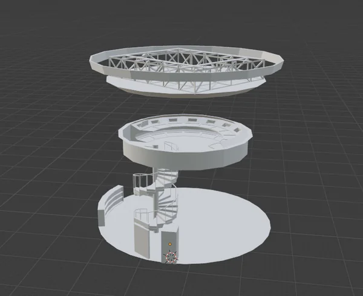
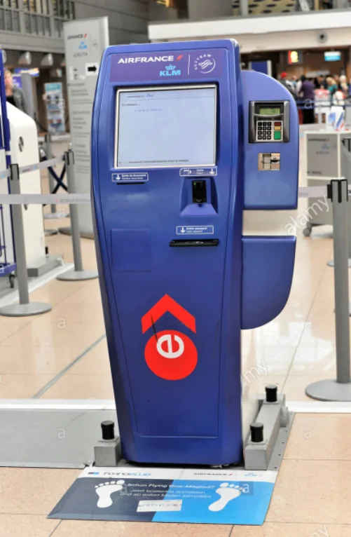
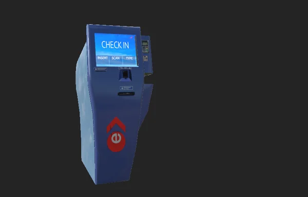
Nine months
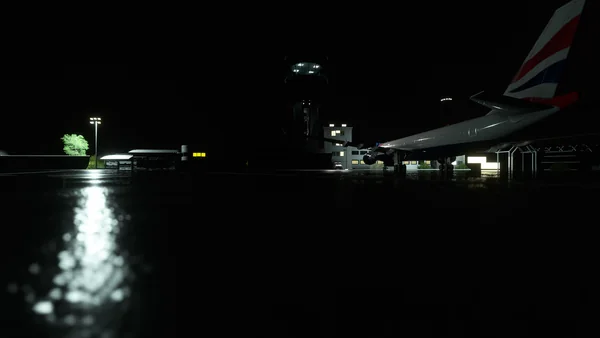
In total, LFBP took nine long months. I came home from work, spent time with the family, and sat down at the PC with my cats.
Every missing reference was an exhausting search. What the first pass of reference gathering misses probably does not exist, or is buried deep in the web.
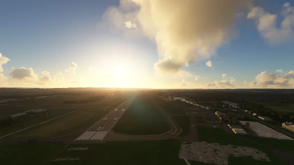
Three screens stopped feeling like enough. I wanted more, to comb through every byte of the internet and understand exactly what I was looking at and how it was made. It had become feverish: it was no longer research. It was a challenge, and I had thrown it down without noticing — and accepted it too.
The military side
On the south side of Pau sits the 5e régiment d'hélicoptères de combat. Here I had to compromise with myself.
When I gathered the references, Maps had not yet obscured the area; that happened later. I had almost nothing beyond a few images from the regiment's own social accounts, and the area was under construction. It hurt to give up on reproducing it as it looked, but at some point I understood: either I compromised and dropped the compulsive precision, or I left the military side out.
A few static vehicles, a few animated figures at their tasks, and the best I could do with an area that was:
- classified;
- changing while I was working on it;
- barely documented on social media;
- impossible for the people helping me to photograph.
That is why I am so proud of it. Because I sweated every single pixel of the south side of Pau. And now, when I look at it, it reminds me a little of home.
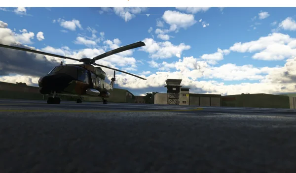
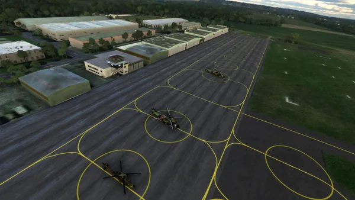
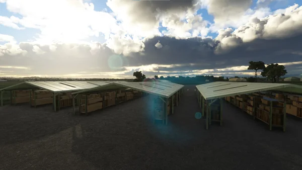
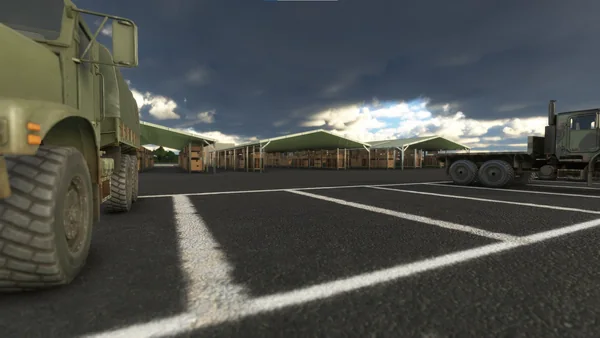